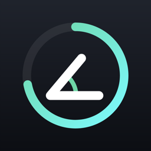
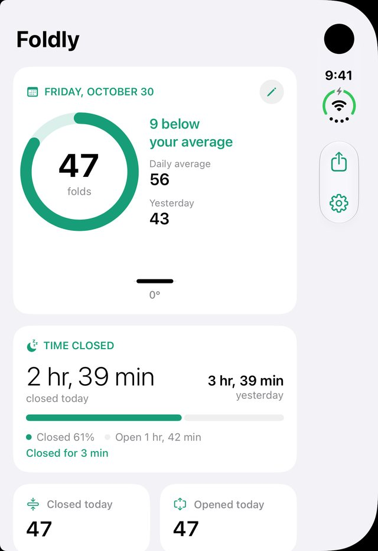
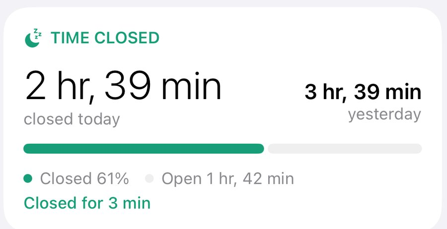
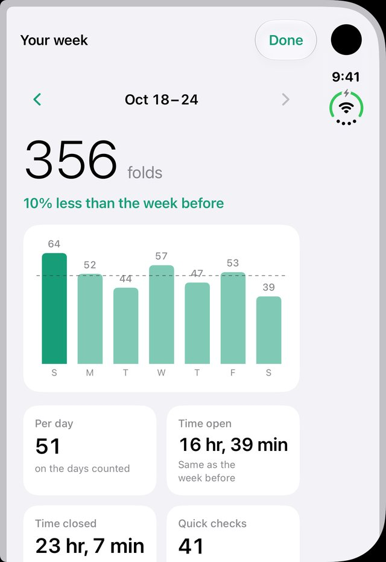
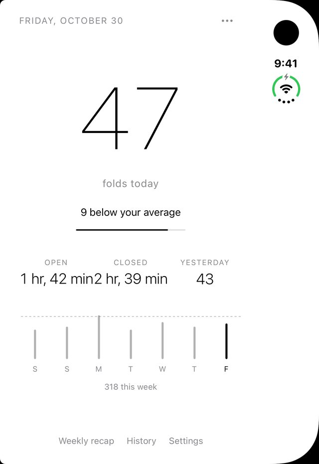

<title>Foldly for iPhone Duo</title>
<meta name="claude:viewport-fit-sides" content="cover">
<meta name="description" content="Foldly counts every time you open your iPhone Duo. See how often you unfold, how long it rests, and how your week compares. Public beta on TestFlight.">
<link rel="icon" href="icon.png">
<style>
/* Layout: one centered column on black, like a product film. A 3D iPhone Duo plays chapters under the hero; sections follow, centered. */
:root {
  color-scheme: dark;
  --bg: #000;
  --fg: #f5f5f7;
  --muted: #86868b;
  --soft: #a1a1a6;
  --card: #111113;
  --card-2: #1c1c1e;
  --line: #2a2a2d;
  --accent: #6ee0b0;
  --font: -apple-system, BlinkMacSystemFont, "SF Pro Display", "SF Pro Text", "Inter", "Helvetica Neue", Arial, sans-serif;
}
* { box-sizing: border-box }
[hidden] { display: none !important }
html { scroll-behavior: smooth; -webkit-text-size-adjust: 100% }
@media (prefers-reduced-motion: reduce) { html { scroll-behavior: auto } }
body {
  background: var(--bg); color: var(--fg); font: 400 17px/1.47 var(--font);
  -webkit-font-smoothing: antialiased; letter-spacing: -0.01em;
  padding-left: max(16px, env(safe-area-inset-left, 0px)); padding-right: max(16px, env(safe-area-inset-right, 0px));
  overflow-x: hidden;
}
a { color: inherit }
h1, h2, h3 { margin: 0; text-wrap: balance; font-weight: 700 }
p { margin: 0 }
b, strong { color: var(--fg); font-weight: 600 }
:focus-visible { outline: 2px solid var(--fg); outline-offset: 3px; border-radius: 10px }

/* Header */
body::before { content: ""; position: fixed; inset: 0 0 auto; height: env(safe-area-inset-top, 0px); z-index: 30; background: var(--bg) }
.top {
  position: sticky; top: env(safe-area-inset-top, 0px); z-index: 20;
  margin-inline: calc(-1 * max(16px, env(safe-area-inset-left, 0px))) calc(-1 * max(16px, env(safe-area-inset-right, 0px)));
  padding: 10px max(16px, env(safe-area-inset-right, 0px)) 10px max(16px, env(safe-area-inset-left, 0px));
  background: rgba(0, 0, 0, .78); backdrop-filter: saturate(180%) blur(20px); -webkit-backdrop-filter: saturate(180%) blur(20px);
}
.top-in { max-width: 980px; margin: 0 auto; display: flex; align-items: center; justify-content: space-between; gap: 16px }
.brand { display: flex; align-items: center; gap: 10px; text-decoration: none; font-weight: 600; font-size: 19px }
.brand img { width: 30px; height: 30px; border-radius: 7px }
.links { display: flex; gap: 22px; font-size: 13px; color: var(--soft) }
.links a { text-decoration: none } .links a:hover { color: var(--fg) }
@media (max-width: 860px) { .links { display: none } }
.pill-btn {
  display: inline-flex; align-items: center; justify-content: center; gap: 8px; text-decoration: none;
  background: var(--fg); color: #000; font: 600 14px var(--font); height: 34px; padding: 0 16px; border-radius: 999px; border: 0; cursor: pointer; white-space: nowrap;
}
.pill-btn svg { width: 14px; height: 14px }
.pill-btn.big { height: 50px; font-size: 17px; padding: 0 28px; width: 100%; max-width: 360px }
.pill-btn.dark { background: var(--card-2); color: var(--fg) }

/* Hero */
.hero { max-width: 760px; margin: 0 auto; padding-top: 56px; display: flex; flex-direction: column; align-items: center; text-align: center; gap: 18px }
.hero .icon { width: 76px; height: 76px; border-radius: 18px }
.hero h1 { font-size: clamp(40px, 7.4vw, 76px); line-height: 1.04; letter-spacing: -0.035em }
.hero h1 span { color: var(--muted) }
.sub { font-size: clamp(17px, 2.2vw, 21px); color: var(--muted); max-width: 30em }
.beta { display: flex; flex-direction: column; align-items: center; gap: 14px; width: 100%; margin-top: 6px }
.beta-card { display: flex; align-items: center; gap: 12px; text-align: left; background: var(--card); border-radius: 16px; padding: 10px 16px 10px 10px }
.cal { width: 40px; height: 40px; border-radius: 10px; background: #fff; color: #000; display: flex; flex-direction: column; align-items: center; justify-content: center; line-height: 1 }
.cal small { font-size: 9px; font-weight: 700; color: #e5484d; text-transform: uppercase; letter-spacing: .04em }
.cal strong { color: #000; font-size: 19px; font-weight: 700 }
.beta-card b { display: block; font-size: 15px }
.beta-card span { font-size: 13px; color: var(--muted) }

/* The film: the Duo plays chapters */
.film { max-width: 760px; margin: 28px auto 0; display: flex; flex-direction: column; align-items: center; gap: 18px }
.orb { position: relative; width: min(100%, 560px); aspect-ratio: 1; border-radius: 50% }
.orb::before { content: ""; position: absolute; inset: 0; border-radius: 50%; background: radial-gradient(closest-side, #161618 0%, #0d0d0e 55%, rgba(0,0,0,0) 100%) }
.orb canvas { position: absolute; inset: -6%; width: 112%; height: 112%; display: block }
.orb .fallback { position: absolute; inset: 18% 30%; width: 40%; height: auto; border-radius: 22px; display: none }
.no-gl .orb canvas { display: none } .no-gl .orb .fallback { display: block }
.cap { min-height: 3.2em; font-size: 19px; color: var(--muted); text-align: center; max-width: 25em; transition: opacity .35s }
.cap b { font-weight: 600 }
.chapters { display: flex; align-items: center; gap: 10px }
.play { width: 38px; height: 38px; border-radius: 50%; border: 0; background: var(--card-2); color: var(--fg); display: grid; place-items: center; cursor: pointer }
.play svg { width: 14px; height: 14px }
.bar { display: flex; align-items: center; gap: 2px; padding: 4px; border-radius: 999px; background: var(--card); max-width: 100%; overflow: hidden }
.chip { position: relative; height: 30px; min-width: 22px; padding: 0 9px; border-radius: 999px; border: 0; background: transparent; color: var(--fg); font: 500 13px var(--font); cursor: pointer; display: grid; place-items: center; overflow: hidden; transition: min-width .35s, padding .35s }
.chip::before { content: ""; width: 5px; height: 5px; border-radius: 50%; background: #6e6e73 }
.chip span { display: none; position: relative; z-index: 1; white-space: nowrap }
.chip i { position: absolute; inset: 0 auto 0 0; width: 0; background: #3a3a3c; border-radius: 999px }
.chip[aria-current="step"] { background: #2c2c2e; padding: 0 14px }
.chip[aria-current="step"]::before { display: none }
.chip[aria-current="step"] span { display: block }
.shown { font-size: 12px; color: #6e6e73; text-align: center }

/* Sections */
.sec { max-width: 980px; margin: 0 auto; padding-block: 120px 0; display: flex; flex-direction: column; align-items: center; text-align: center; gap: 18px }
.eyebrow { font-size: 17px; font-weight: 600; color: var(--fg) }
.sec h2 { font-size: clamp(36px, 6vw, 64px); line-height: 1.05; letter-spacing: -0.035em }
.sec h2 span { color: var(--muted) }
.body { font-size: clamp(17px, 2vw, 21px); color: var(--muted); max-width: 32em }
.grid { width: 100%; display: grid; grid-template-columns: repeat(auto-fit, minmax(min(100%, 220px), 1fr)); gap: 12px; margin-top: 18px; text-align: left }
.card { background: var(--card); border-radius: 20px; padding: 20px; display: flex; flex-direction: column; gap: 6px; min-width: 0 }
.card p { font-size: 15px; color: var(--muted); line-height: 1.45 }
.card p b { font-weight: 600 }
.tag { display: inline-block; margin-left: 6px; font-size: 11px; font-weight: 600; color: var(--accent); border: 1px solid rgba(110,224,176,.45); border-radius: 6px; padding: 0 5px; vertical-align: 2px }
.shot { width: min(100%, 520px); border-radius: 26px; background: var(--card); padding: 14px; margin-top: 18px }
.shot img { display: block; width: 100%; height: auto; border-radius: 16px }
.screens { width: 100%; display: grid; grid-template-columns: repeat(3, minmax(0, 1fr)); gap: 14px; margin-top: 18px; max-width: 760px }
.screens figure { margin: 0; display: flex; flex-direction: column; gap: 10px; align-items: center }
.screens img { width: 100%; height: auto; border-radius: 22px; border: 1px solid #1f1f22; display: block }
.screens figcaption { font-size: 15px; color: var(--soft) }
.screens figcaption b { display: block }
.duo-shot { width: min(100%, 300px); margin-top: 18px }
.duo-shot img { width: 100%; height: auto; display: block; border-radius: 30px; border: 1px solid #1f1f22 }
.facts { display: flex; flex-wrap: wrap; justify-content: center; gap: 8px; margin-top: 6px }
.fact { background: var(--card); border-radius: 999px; padding: 9px 16px; font-size: 15px; color: var(--soft) }
.fact b { font-weight: 600 }

.qa { width: 100%; max-width: 760px; text-align: left; margin-top: 12px }
.qa details { border-bottom: 1px solid var(--line); padding: 20px 4px }
.qa summary { cursor: pointer; list-style: none; display: flex; justify-content: space-between; gap: 16px; font-size: 19px; font-weight: 600 }
.qa summary::-webkit-details-marker { display: none }
.qa summary::after { content: "+"; color: var(--muted); font-weight: 400; font-size: 24px; line-height: 1 }
.qa details[open] summary::after { content: "−" }
.qa p { margin-top: 10px; color: var(--muted); font-size: 17px; max-width: 36em }

.cta { padding-block: 140px 110px }
.cta .icon { width: 96px; height: 96px; border-radius: 22px }
.cta-buttons { display: flex; flex-direction: column; align-items: center; gap: 12px; width: 100%; margin-top: 10px }
.cta small { font-size: 13px; color: var(--muted) }
.copied { min-height: 1.3em; font-size: 14px; color: var(--accent) }
.link-btn { background: none; border: 0; color: var(--accent); font: 500 17px var(--font); cursor: pointer; padding: 6px }

footer { max-width: 980px; margin: 0 auto; padding-block: 28px 48px; border-top: 1px solid var(--line); font-size: 12px; color: #6e6e73; display: flex; flex-direction: column; gap: 10px }
footer a { color: var(--soft) }

@media (max-width: 600px) {
  .sec { padding-block: 88px 0 }
  .screens { grid-template-columns: minmax(0, 1fr) minmax(0, 1fr) minmax(0, 1fr); gap: 8px }
  .screens img { border-radius: 14px }
  .screens figcaption { font-size: 13px }
  .cap { font-size: 17px }
}
@media (prefers-reduced-motion: reduce) { .chip, .cap { transition: none } }
</style>

<header class="top">
  <div class="top-in">
    <a class="brand" href="#top">Foldly</a>
    <nav class="links" aria-label="Sections">
      <a href="#counter">Counter</a><a href="#time">Time</a><a href="#week">Week</a><a href="#iphone-duo">iPhone Duo</a><a href="#looks">Looks</a><a href="#privacy">Privacy</a><a href="#questions">Questions</a>
    </nav>
    <a class="pill-btn" href="#beta">Join the beta <svg viewBox="0 0 16 16" fill="none" stroke="currentColor" stroke-width="2"><path d="M3 8h9M8.5 4l4 4-4 4"/></svg></a>
  </div>
</header>

<main id="top">
  <section class="hero" aria-labelledby="hero-h">
    
    <h1 id="hero-h">Every fold, counted. <span>Made for iPhone Duo.</span></h1>
    <p class="sub">Each time you open your Duo, Foldly counts it. <b>See how often you unfold,</b> how long it rests, and how your week compares.</p>
    <div class="beta">
      <div class="beta-card"><div class="cal" aria-hidden="true"><small>Beta</small><strong>β</strong></div><div><b>Public beta</b><span>Open now on TestFlight</span></div></div>
      <a class="pill-btn big" href="#beta">Join the beta <svg viewBox="0 0 16 16" fill="none" stroke="currentColor" stroke-width="2"><path d="M3 8h9M8.5 4l4 4-4 4"/></svg></a>
    </div>
  </section>

  <section class="film" aria-label="Foldly on iPhone Duo">
    <div class="orb">
      <canvas id="duo" aria-hidden="true"></canvas>
      
    </div>
    <p class="cap" id="cap" aria-live="polite"></p>
    <div class="chapters">
      <button class="play" id="play" type="button" aria-label="Pause">
        <svg id="ico-pause" viewBox="0 0 14 14" fill="currentColor"><rect x="2" y="1" width="3.5" height="12" rx="1"/><rect x="8.5" y="1" width="3.5" height="12" rx="1"/></svg>
        <svg id="ico-play" viewBox="0 0 14 14" fill="currentColor" hidden><path d="M3 1.5v11l9.5-5.5z"/></svg>
      </button>
      <div class="bar" id="bar" role="group" aria-label="Chapters"></div>
    </div>
    <p class="shown">Shown on iPhone Duo. Foldly runs on any iPhone with iOS 17 or later.</p>
  </section>

  <section class="sec" id="counter" aria-labelledby="counter-h">
    <p class="eyebrow">Counter</p>
    <h2 id="counter-h">Open it. It counts. <span>No button to press.</span></h2>
    <p class="body">Foldly reads the hinge while it's on screen. When it isn't, a Shortcuts automation counts for it, <b>so every opening is there.</b></p>
    <div class="grid">
      <div class="card"><b>The hinge does the work</b><p>Each opening adds one, live, with a soft click.</p></div>
      <div class="card"><b>Even with Foldly closed</b><p>“When iPhone is Closed” runs “Count a fold”. Set up in a few taps.</p></div>
      <div class="card"><b>Against your average</b><p>Today next to your daily average and yesterday.</p></div>
      <div class="card"><b>A limit, only if you want one</b><p>Off by default. Alerts at 80 % and 100 %.<span class="tag">Plus</span></p></div>
    </div>
  </section>

  <section class="sec" id="time" aria-labelledby="time-h">
    <p class="eyebrow">Time</p>
    <h2 id="time-h">Open or closed. <span>Down to the minute.</span></h2>
    <p class="body">Foldly keeps both clocks: how long your Duo is open, and how long it rests. <b>Your longest break</b> of the day too.</p>
    <div class="shot"></div>
  </section>

  <section class="sec" id="week" aria-labelledby="week-h">
    <p class="eyebrow">Week</p>
    <h2 id="week-h">Your week. <span>Every Sunday.</span></h2>
    <p class="body">A short recap on Sunday evening: your total, the change from last week, <b>your calmest and busiest days,</b> open and closed time.</p>
    <div class="duo-shot"></div>
  </section>

  <section class="sec" id="iphone-duo" aria-labelledby="duo-h">
    <p class="eyebrow">iPhone Duo</p>
    <h2 id="duo-h">Ready for iPhone Duo. <span>Every pose.</span></h2>
    <p class="body">Closed, Foldly runs on the outer display like on any iPhone. Open, it takes the big screen. Half open, <b>it stands on your desk</b> like a little dashboard. Watch the film above, or <button class="link-btn" type="button" id="replay">play it again</button></p>
    <div class="grid">
      <div class="card"><b>Outer display</b><p>Today's count, your average and the time it rests, right by the camera.</p></div>
      <div class="card"><b>Live Activity</b><p>Your count on the Lock Screen and the outer display, updated at every fold.</p></div>
      <div class="card"><b>StandBy</b><p>Fold it in an L, add a Foldly widget, and your numbers stay big and readable.</p></div>
      <div class="card"><b>Any iPhone</b><p>No hinge? Tap the number to count. Everything else works the same.</p></div>
    </div>
  </section>

  <section class="sec" id="widgets" aria-labelledby="widgets-h">
    <p class="eyebrow">Widgets</p>
    <h2 id="widgets-h">Your count. <span>Everywhere.</span></h2>
    <p class="body">Home Screen, Lock Screen and StandBy. <b>Open &amp; closed</b> shows both clocks side by side; the big widget adds your week.</p>
    <div class="duo-shot"></div>
  </section>

  <section class="sec" id="looks" aria-labelledby="looks-h">
    <p class="eyebrow">Looks</p>
    <h2 id="looks-h">Make it yours. <span>Three looks.</span></h2>
    <p class="body">Pick one the first time you open Foldly, <b>switch anytime</b> in Settings.</p>
    <div class="screens">
      <figure><figcaption><b>Classic</b>Like the Health app</figcaption></figure>
      <figure><figcaption><b>Modern</b>Big numbers, dark</figcaption></figure>
      <figure><figcaption><b>Minimal</b>Just your numbers</figcaption></figure>
    </div>
  </section>

  <section class="sec" aria-labelledby="details-h">
    <p class="eyebrow">Details</p>
    <h2 id="details-h">And everything else. <span>The small things.</span></h2>
    <div class="grid">
      <div class="card"><b>Full history<span class="tag">Plus</span></b><p>30 days, 12 months and a calendar of your days, with your records.</p></div>
      <div class="card"><b>Export<span class="tag">Plus</span></b><p>Your history as a spreadsheet (CSV).</p></div>
      <div class="card"><b>Widget colors<span class="tag">Plus</span></b><p>Five colors for your widgets.</p></div>
      <div class="card"><b>Evening summary</b><p>An optional note at the end of the day.</p></div>
      <div class="card"><b>Share your day</b><p>Today's numbers on a clean card.</p></div>
      <div class="card"><b>Opening animation</b><p>The hinge in the logo unfolds, then your count rolls up.</p></div>
      <div class="card"><b>Shortcuts</b><p>“Count a fold” works in any automation.</p></div>
      <div class="card"><b>Sounds and vibrations</b><p>Feel each fold, or keep it silent.</p></div>
    </div>
  </section>

  <section class="sec" id="privacy" aria-labelledby="privacy-h">
    <p class="eyebrow">Privacy</p>
    <h2 id="privacy-h">No account. No ads. <span>Nothing leaves your iPhone.</span></h2>
    <p class="body">Foldly collects no data. Your folds stay on your iPhone, <b>shared only with Foldly's own widgets.</b> <a href="https://foldly.netlify.app/en/privacy.html">Privacy policy</a></p>
    <div class="facts"><span class="fact"><b>No</b> account</span><span class="fact"><b>No</b> ads or analytics</span><span class="fact"><b>No</b> third-party services</span><span class="fact">Works <b>offline</b></span></div>
  </section>

  <section class="sec" id="questions" aria-labelledby="questions-h">
    <h2 id="questions-h">Questions.</h2>
    <div class="qa">
      <details><summary>What do I need?</summary><p>An iPhone with iOS 17 or later. On iPhone Duo, Foldly counts each fold by itself. On other iPhones, you tap the number to count.</p></details>
      <details><summary>Does it count when the app is closed?</summary><p>Yes, with a Shortcuts automation: “When iPhone is Closed”, then “Count a fold”. Foldly walks you through it.</p></details>
      <details><summary>Will Foldly limit how I use my phone?</summary><p>No. It only counts. The daily limit is optional and off by default; without it, Foldly compares today with your own average.</p></details>
      <details><summary>Where do my numbers go?</summary><p>Nowhere. They stay on your iPhone, shared only with Foldly's widgets. There is no account and no server.</p></details>
      <details><summary>What does it cost?</summary><p>The beta is free. Foldly+ is a one-time purchase for the full history, every widget, widget colors, limit alerts and export. No subscription.</p></details>
      <details><summary>Which languages?</summary><p>English and French. Foldly follows your iPhone's language.</p></details>
      <details><summary>When can I try it?</summary><p>Now. Install TestFlight from the App Store, then open the beta link on your iPhone.</p></details>
    </div>
  </section>

  <section class="sec cta" id="beta" aria-labelledby="beta-h">
    
    <h2 id="beta-h">The beta is open.</h2>
    <p class="body">Install TestFlight, open the link on your iPhone, and <b>Foldly is yours to try.</b></p>
    <div class="cta-buttons">
      <a class="pill-btn big" href="https://testflight.apple.com/join/F3SbgAp2">Join on TestFlight</a>
      <small>iPhone · iOS 17 or later</small>
      <button class="link-btn" type="button" id="share">Share Foldly with a friend</button>
      <p class="copied" id="copied" aria-live="polite"></p>
    </div>
  </section>
</main>

<footer>
  <p>Apple, iPhone, iPhone Duo, StandBy and TestFlight are trademarks of Apple Inc. Foldly is an independent app, not affiliated with or endorsed by Apple.</p>
  <p>Copyright © 2026 Foldly. <a href="https://foldly.netlify.app/en/privacy.html">Privacy</a></p>
</footer>

<script type="importmap">{"imports":{"three":"https://cdn.jsdelivr.net/npm/three@0.160.0/build/three.module.js","three/addons/":"https://cdn.jsdelivr.net/npm/three@0.160.0/examples/jsm/"}}</script>
<script type="module">
import * as THREE from 'three';
import { RoomEnvironment } from 'three/addons/environments/RoomEnvironment.js';
import { createDuo } from './duo.js';

const reduce = matchMedia('(prefers-reduced-motion: reduce)').matches;
const canvas = document.getElementById('duo');
const capEl = document.getElementById('cap');
const bar = document.getElementById('bar');
const playBtn = document.getElementById('play');

// Chapters: the pose of the Duo, the screen it shows, and the caption.
// fold: 0 closed, 98 half open (an L), 180 flat. rz 90: closed and held upright. ry 180: seen from the back.
const CHAPTERS = [
  { id: 'closed', label: 'Closed', dur: 4.6, fold: 0, rx: -4, ry: -18, rz: 90, outer: 'count',
    cap: '<b>Closed, it\'s an iPhone.</b> Today\'s count sits on the outer display.' },
  { id: 'open', label: 'Open', dur: 5.2, fold: 180, rx: -10, ry: 14, rz: 0, inner: 'classic', outer: 'count', pulse: true,
    cap: '<b>Open it, and it counts.</b> Every opening adds one, live.' },
  { id: 'upright', label: 'Upright', dur: 4.6, fold: 180, rx: -6, ry: -12, rz: 0, inner: 'night', outer: 'count',
    cap: '<b>The big screen, for your day.</b> Open and closed time, your average, your week.' },
  { id: 'desk', label: 'Desk', dur: 5, fold: 98, rx: -26, ry: 28, rz: 0, inner: 'classic', outer: 'count',
    cap: '<b>Fold it halfway.</b> It stands on your desk, like a little dashboard.' },
  { id: 'week', label: 'Week', dur: 4.6, fold: 0, rx: -4, ry: 16, rz: 90, outer: 'week',
    cap: '<b>Every Sunday, your week.</b> The total, the change, your calmest day.' },
  { id: 'back', label: 'Outer display', dur: 5, fold: 0, rx: -4, ry: -20, rz: 90, outer: 'widgets', spinBack: true,
    cap: '<b>Close it, and it\'s still there.</b> Widgets and a Live Activity keep your count in view.' },
];

// Chapter bar
CHAPTERS.forEach((c, i) => {
  const b = document.createElement('button');
  b.type = 'button'; b.className = 'chip'; b.id = 'chapter-' + c.id;
  b.setAttribute('aria-label', c.label);
  b.innerHTML = `<i></i><span>${c.label}</span>`;
  b.addEventListener('click', () => go(i, true));
  bar.appendChild(b);
});
const chips = [...bar.children];

let renderer;
try {
  renderer = new THREE.WebGLRenderer({ canvas, antialias: true, alpha: true });
} catch (e) {
  document.documentElement.classList.add('no-gl');
}

let index = 0, t = 0, playing = !reduce, inView = true;
function setCaption(i) {
  capEl.style.opacity = 0;
  setTimeout(() => { capEl.innerHTML = CHAPTERS[i].cap; capEl.style.opacity = 1; }, reduce ? 0 : 180);
  chips.forEach((c, k) => c.toggleAttribute('aria-current', k === i) || (k === i && c.setAttribute('aria-current', 'step')));
  chips.forEach((c, k) => { if (k === i) c.setAttribute('aria-current', 'step'); else c.removeAttribute('aria-current'); });
}
function setPlaying(p) {
  playing = p;
  document.getElementById('ico-pause').hidden = !p;
  document.getElementById('ico-play').hidden = p;
  playBtn.setAttribute('aria-label', p ? 'Pause' : 'Play');
}
playBtn.addEventListener('click', () => setPlaying(!playing));
document.getElementById('replay').addEventListener('click', () => {
  go(0, false); setPlaying(true);
  document.querySelector('.film').scrollIntoView({ behavior: reduce ? 'auto' : 'smooth', block: 'center' });
});
setPlaying(playing);
setCaption(0);

// Share
document.getElementById('share').addEventListener('click', async () => {
  const url = 'https://testflight.apple.com/join/F3SbgAp2';
  const out = document.getElementById('copied');
  try { await navigator.clipboard.writeText(url); out.textContent = 'Link copied: ' + url; }
  catch { out.textContent = url; }
});

let go = (i) => { index = i; t = 0; setCaption(i); };
if (renderer) {
  renderer.setPixelRatio(Math.min(2, window.devicePixelRatio || 1));
  renderer.toneMapping = THREE.ACESFilmicToneMapping;
  renderer.toneMappingExposure = 1.0;
  renderer.outputColorSpace = THREE.SRGBColorSpace;
  const scene = new THREE.Scene();
  const pmrem = new THREE.PMREMGenerator(renderer);
  scene.environment = pmrem.fromScene(new RoomEnvironment(), 0.04).texture;
  const key = new THREE.DirectionalLight(0xffffff, 1.6); key.position.set(3, 4, 5); scene.add(key);
  const back = new THREE.DirectionalLight(0xffffff, 0.8); back.position.set(-4, 2, -3); scene.add(back);
  const camera = new THREE.PerspectiveCamera(24, 1, 0.1, 50);
  camera.position.set(0, 0, 5.2);

  // Natural titanium, like the film
  const duo = createDuo({ color: 0xc9c0b2 });
  scene.add(duo.root);

  const loader = new THREE.TextureLoader();
  const tex = {};
  const T = (name) => {
    if (!tex[name]) {
      tex[name] = loader.load(`tex/outer-${name}.jpg`);
      tex[name].colorSpace = THREE.SRGBColorSpace;
      tex[name].anisotropy = renderer.capabilities.getMaxAnisotropy();
    }
    return tex[name];
  };
  const INNER = (name) => T(name); // inner display screens (to be replaced by real inner captures)
  ['count', 'classic', 'night', 'week', 'widgets'].forEach(T);
  duo.setOuter(T('count'));
  duo.setInner(INNER('classic'));

  const cur = { fold: 0, rx: -4, ry: -18, rz: 90, spin: 0 };
  let spinTarget = 0;
  let outerNow = 'count', outerWanted = 'count', innerNow = 'classic';

  go = (i, user) => {
    const prev = CHAPTERS[index];
    index = i; t = 0;
    const c = CHAPTERS[i];
    setCaption(i);
    if (user) setPlaying(playing);
    // A full turn when the outer screen changes: it swaps while the back faces you.
    if (c.outer && c.outer !== outerWanted) {
      outerWanted = c.outer;
      if (reduce || c.fold > 60 || prev.fold > 60) { outerNow = c.outer; duo.setOuter(T(c.outer)); }
      else spinTarget += Math.PI * 2;
    }
    if (c.spinBack && !reduce) spinTarget += Math.PI * 2;
    if (c.inner && c.inner !== innerNow) { innerNow = c.inner; duo.setInner(INNER(c.inner)); }
  };

  function resize() {
    const r = canvas.getBoundingClientRect();
    const w = Math.max(1, r.width), h = Math.max(1, r.height);
    renderer.setSize(w, h, false);
    camera.aspect = w / h;
    camera.updateProjectionMatrix();
  }
  new ResizeObserver(resize).observe(canvas);
  resize();

  new IntersectionObserver(([e]) => { inView = e.isIntersecting; }, { threshold: 0.05 }).observe(canvas);

  const D = Math.PI / 180;
  let last = performance.now();
  const start = last;
  function frame(now) {
    requestAnimationFrame(frame);
    const dt = Math.min(0.05, (now - last) / 1000);
    last = now;
    if (!inView) return;
    const c = CHAPTERS[index];
    if (playing) {
      t += dt;
      if (t >= c.dur) go((index + 1) % CHAPTERS.length, false);
    }
    chips.forEach((chip, k) => {
      const fill = chip.firstChild;
      fill.style.width = k === index ? Math.min(100, (t / c.dur) * 100) + '%' : '0';
    });
    const time = (now - start) / 1000;
    const goal = { fold: c.fold, rx: c.rx, ry: c.ry, rz: c.rz };
    if (!reduce) {
      goal.ry += Math.sin(time * 0.5) * 6;
      goal.rx += Math.sin(time * 0.37 + 1) * 2;
      if (c.pulse && t > 2.2 && t < 3.6) goal.fold = 180 - 110 * Math.sin((t - 2.2) / 1.4 * Math.PI);
    }
    const a = reduce ? 1 : 1 - Math.exp(-dt * 3.6);
    cur.fold += (goal.fold - cur.fold) * a;
    cur.rx += (goal.rx - cur.rx) * a;
    cur.ry += (goal.ry - cur.ry) * a;
    cur.rz += (goal.rz - cur.rz) * a;
    cur.spin += (spinTarget - cur.spin) * (reduce ? 1 : 1 - Math.exp(-dt * 2.8));
    if (outerNow !== outerWanted && Math.abs(spinTarget - cur.spin) < Math.PI) {
      outerNow = outerWanted; duo.setOuter(T(outerNow));
    }
    duo.setFold(Math.max(0, Math.min(180, cur.fold)));
    duo.root.rotation.set(cur.rx * D, cur.ry * D + cur.spin, cur.rz * D, 'YXZ');
    renderer.render(scene, camera);
  }
  requestAnimationFrame(frame);
} else {
  // Without WebGL: the chapters still play, over a still screenshot.
  setInterval(() => { if (playing) { t += 0.25; if (t >= CHAPTERS[index].dur) go((index + 1) % CHAPTERS.length); } }, 250);
}
</script>
